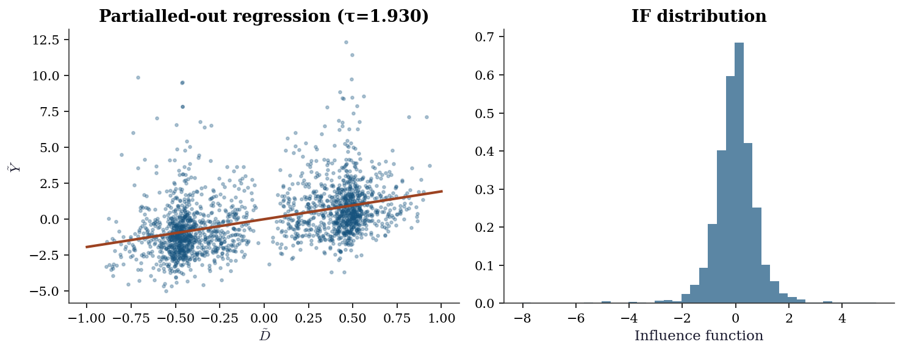
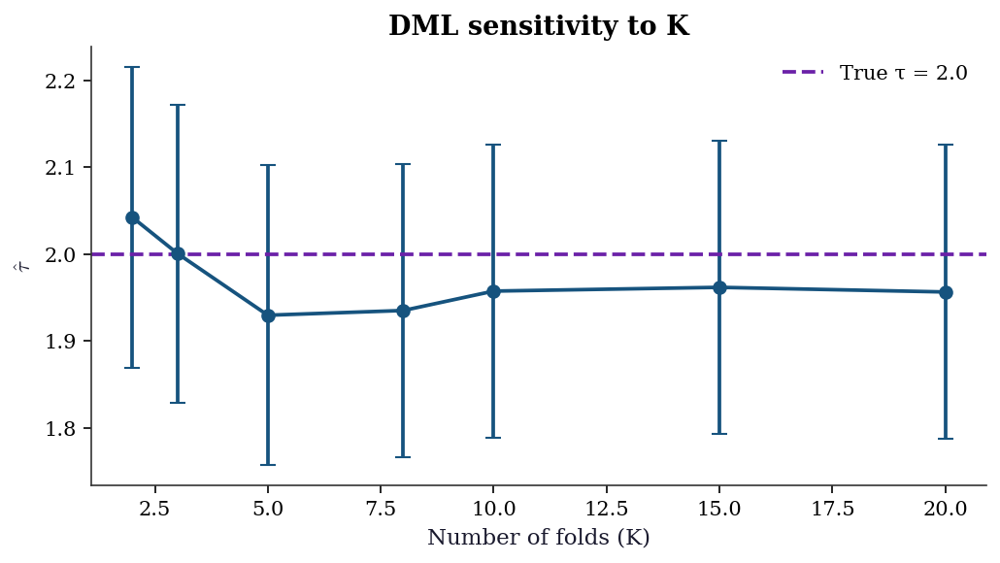
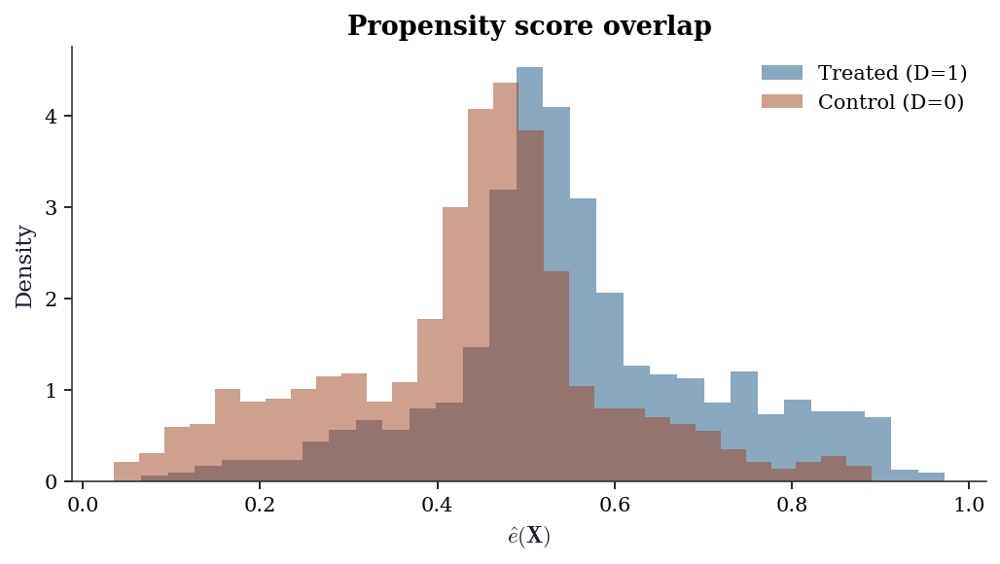
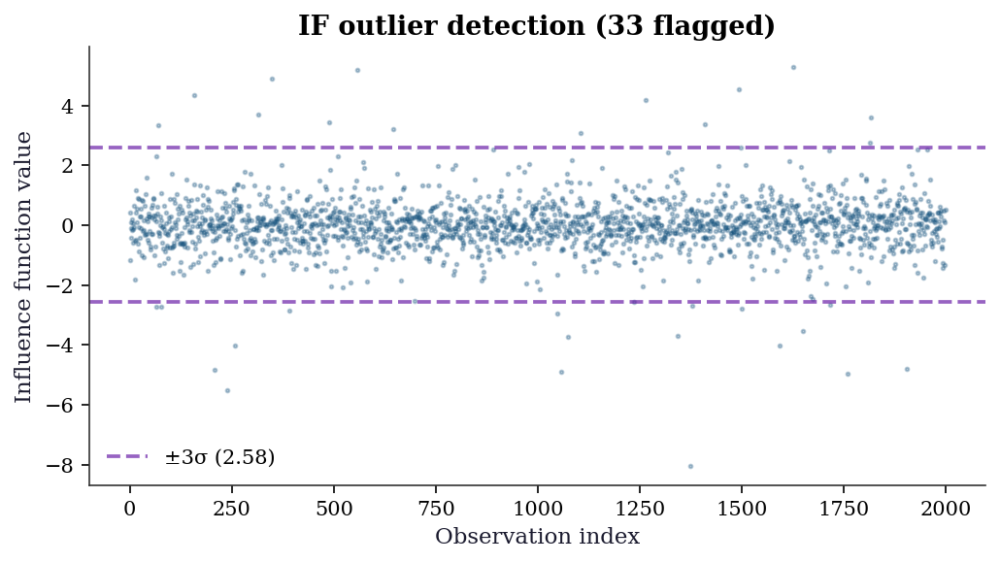
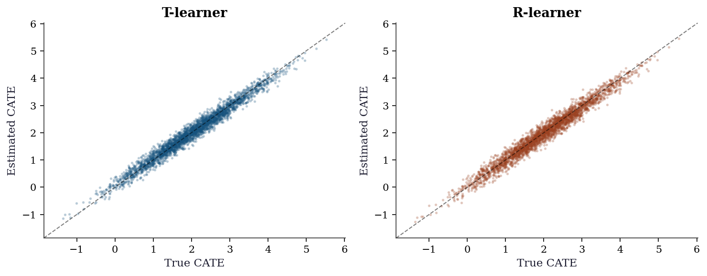
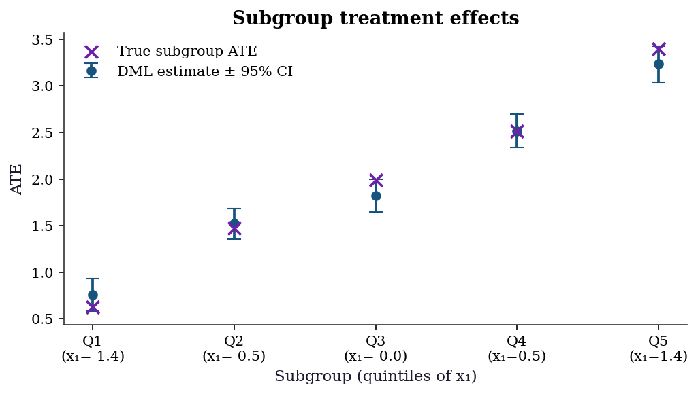
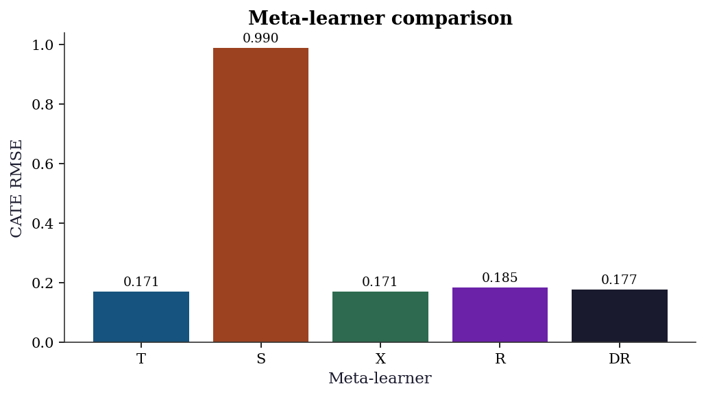

import numpy as np
import matplotlib.pyplot as plt
import statsmodels.api as sm
from sklearn.linear_model import LassoCV, LogisticRegressionCV
from sklearn.model_selection import KFold
from scipy import stats
plt.style.use('assets/book.mplstyle')
rng = np.random.default_rng(42)23 Heterogeneous Treatment Effects and Double Machine Learning
23.1 Motivation
Chapter 21 estimated the average treatment effect. But treatment effects are rarely constant: a drug may help older patients more than younger ones; a job training program may benefit the least skilled most. Estimating how the effect varies across the population is heterogeneous treatment effect (HTE) estimation.
The challenge: estimating \(\tau(\mathbf{x}) = \mathbb{E}[Y(1) - Y(0) \mid \mathbf{X} = \mathbf{x}]\) requires flexible models for the outcome and propensity, but plugging in ML predictions naively introduces regularization bias.
Double Machine Learning (DML) solves this by using Neyman orthogonality and cross-fitting to remove the first-order bias from nuisance estimation. The result: \(\sqrt{n}\)-consistent ATE estimates even when the nuisance models converge at slower-than-\(\sqrt{n}\) rates.
This chapter implements DML from scratch using statsmodels for the final inference and scikit-learn for the nuisance models.
23.2 Mathematical Foundation
23.2.1 The partially linear model
\[ Y = D\tau + g_0(\mathbf{X}) + U, \qquad D = m_0(\mathbf{X}) + V, \]
where \(g_0\) and \(m_0\) are unknown nuisance functions. The target is \(\tau\) (the treatment effect); \(g_0\) and \(m_0\) are nuisances that must be estimated but are not of primary interest.
23.2.2 Why naive plug-in fails
The obvious approach: estimate \(g_0\) and \(m_0\) with machine learning (Lasso, random forest), plug them in, and estimate \(\tau\) by regressing \(Y - \hat{g}(\mathbf{X})\) on \(D - \hat{m}(\mathbf{X})\).
This does not work. The plug-in estimate of \(\tau\) has bias of order \(O(\|\hat{g} - g_0\| \cdot \|\hat{m} - m_0\|)\). If the nuisance estimators converge at rate \(n^{-1/4}\) (typical for ML in high dimensions), the bias is \(O(n^{-1/2})\) — the same order as the standard error. The bias never goes away relative to the noise, so confidence intervals have wrong coverage and \(p\)-values are invalid.
The root cause: The moment condition \(\mathbb{E}[(Y - D\tau - g(\mathbf{X}))(D - m(\mathbf{X}))] = 0\) is sensitive to errors in \(g\) and \(m\). Small errors in the nuisance functions propagate into first-order bias in \(\hat{\tau}\).
23.2.3 Neyman orthogonality: the fix
The key insight of Chernozhukov et al. (2018): use a different moment condition that is insensitive to nuisance errors at first order. A moment condition \(\psi(\tau; g, m)\) is Neyman-orthogonal if:
\[ \frac{\partial}{\partial g} \mathbb{E}[\psi(\tau_0; g_0, m_0)] = 0 \quad \text{and} \quad \frac{\partial}{\partial m} \mathbb{E}[\psi(\tau_0; g_0, m_0)] = 0. \]
This means: small perturbations of \(g\) and \(m\) around their true values do not change the expected value of \(\psi\). The bias from nuisance estimation becomes second-order: \(O(\|\hat{g} - g_0\|^2)\) instead of \(O(\|\hat{g} - g_0\|)\). For \(n^{-1/4}\)-rate estimators, this is \(O(n^{-1})\), which is negligible relative to the \(n^{-1/2}\) sampling error. The bias vanishes.
23.2.3.1 The Taylor expansion in detail
Let’s see exactly how orthogonality kills the first-order bias. Write the nuisance parameters as a single vector \(\eta = (g, m)\) with true value \(\eta_0 = (g_0, m_0)\). The DML moment for the partially linear model is:
\[ \psi(\tau; \eta) = (Y - D\tau - g(\mathbf{X}))(D - m(\mathbf{X})). \]
At the truth, \(\mathbb{E}[\psi(\tau_0; \eta_0)] = 0\) defines \(\tau_0\). When we plug in estimated \(\hat{\eta}\), we get a bias term. Taylor expand \(\mathbb{E}[\psi(\tau_0; \hat{\eta})]\) around \(\eta_0\):
\[ \mathbb{E}[\psi(\tau_0; \hat{\eta})] = \underbrace{\mathbb{E}[\psi(\tau_0; \eta_0)]}_{= 0} + \underbrace{\partial_\eta \mathbb{E}[\psi(\tau_0; \eta_0)]}_{\text{Gateaux derivative}} \cdot (\hat{\eta} - \eta_0) + O(\|\hat{\eta} - \eta_0\|^2). \]
(The Gâteaux derivative \(\partial_\eta \mathbb{E}[\psi]\) is the directional derivative of the expected moment in function space — how much the expectation changes when the nuisance function \(\eta\) is perturbed. See Appendix A for the formal definition. The key property: if this derivative vanishes at the true \(\eta_0\), small nuisance errors produce only second-order bias in \(\hat{\tau}\).)
The Gateaux derivative has two components. Perturbing in the \(g\) direction:
\[ \frac{\partial}{\partial g} \mathbb{E}[(Y - D\tau_0 - g)(D - m_0)] = -\mathbb{E}[D - m_0(\mathbf{X})] = 0, \]
because \(m_0(\mathbf{X}) = \mathbb{E}[D \mid \mathbf{X}]\) by definition. Perturbing in the \(m\) direction:
\[ \frac{\partial}{\partial m} \mathbb{E}[(Y - D\tau_0 - g_0)(D - m)] = -\mathbb{E}[Y - D\tau_0 - g_0(\mathbf{X})] = -\mathbb{E}[U] = 0, \]
because \(U\) is mean-zero by the model. Both derivatives vanish — this is Neyman orthogonality. The first-order term in the Taylor expansion is exactly zero, so the bias from plugging in \(\hat{\eta}\) is second-order: \(O(\|\hat{g} - g_0\| \cdot \|\hat{m} - m_0\|)\). For ML estimators with \(n^{-1/4}\) rates, this product is \(O(n^{-1/2})\) — negligible relative to sampling noise.
Contrast with the naive moment. The “obvious” moment \(\mathbb{E}[(Y - D\tau - g)(1)] = 0\) is not orthogonal: its derivative in \(g\) is \(-1\), so errors in \(\hat{g}\) create first-order bias. The residualization trick — projecting out \(m(\mathbf{X})\) — is precisely what buys orthogonality.
In practice, DML for the partially linear model reduces to:
- Residualize \(Y\) on \(\mathbf{X}\): \(\tilde{Y} = Y - \hat{g}(\mathbf{X})\)
- Residualize \(D\) on \(\mathbf{X}\): \(\tilde{D} = D - \hat{m}(\mathbf{X})\)
- Regress \(\tilde{Y}\) on \(\tilde{D}\): \(\hat{\tau} = \frac{\sum \tilde{D}_i \tilde{Y}_i}{\sum \tilde{D}_i^2}\)
23.2.4 Cross-fitting
To avoid overfitting bias, DML uses cross-fitting: split the data into \(K\) folds. For each fold, estimate \(\hat{g}\) and \(\hat{m}\) on the other \(K-1\) folds, then compute residuals on the held-out fold. This ensures the nuisance predictions are independent of the observations they’re evaluated on.
Why cross-fitting is needed: the Donsker condition. Classical semiparametric theory requires nuisance estimators to lie in a Donsker class — a function class with bounded complexity, measured by its entropy integral. Linear models and kernel smoothers satisfy Donsker conditions. But ML estimators (Lasso with data-driven penalty, random forests, neural networks) do not: their complexity grows with \(n\), violating the entropy bounds. Without Donsker, the empirical process \(\frac{1}{n}\sum_i \psi(\tau; \hat{\eta})\) does not converge uniformly, and the CLT for the estimator breaks down.
(The Donsker condition bounds the complexity of the function class. Linear models and smooth parametric families satisfy it; random forests and neural networks do not because their complexity grows with sample size. Cross-fitting eliminates the need for this condition by ensuring the nuisance estimates are computed on data independent of the evaluation sample. See Appendix A for a fuller explanation.)
Cross-fitting sidesteps Donsker entirely. Because \(\hat{\eta}^{(-k)}\) is trained on folds \(\neq k\) and evaluated on fold \(k\), the nuisance estimate is fixed (non-random) conditional on the evaluation fold. The empirical process reduces to a simple average of independent terms, and the CLT holds without entropy conditions. This is the key insight that makes DML compatible with arbitrary ML learners.
Practical implication: \(K = 5\) is standard. Smaller \(K\) wastes data in the nuisance estimation; larger \(K\) increases computation with diminishing returns. Unlike cross-validation (which averages predictions), cross-fitting concatenates held-out residuals to form a single full-sample estimate.
23.2.5 Semiparametric efficiency bound
The DML estimator is not just consistent — it is efficient. Under the conditions above, the asymptotic variance \(V\) in
\[ \sqrt{n}(\hat{\tau} - \tau_0) \xrightarrow{d} \mathcal{N}(0, V) \]
achieves the semiparametric efficiency bound (Hahn, 1998). This means: among all regular estimators that do not restrict \(g_0\) and \(m_0\) to parametric families, no estimator has smaller asymptotic variance than DML.
For the partially linear model, the efficient variance is:
\[ V = \frac{\mathbb{E}[U^2 V^2]}{\left(\mathbb{E}[V^2]\right)^2}, \]
where \(U = Y - D\tau_0 - g_0(\mathbf{X})\) and \(V = D - m_0(\mathbf{X})\). This is estimated by \(\hat{V} = \frac{\frac{1}{n}\sum_i \hat{U}_i^2 \hat{V}_i^2}{(\frac{1}{n}\sum_i \hat{V}_i^2)^2}\), which is the heteroscedasticity-robust sandwich variance from Chapter 12’s influence function theory.
23.2.6 DML for the interactive model
The partially linear model assumes a constant treatment effect \(\tau\). A different model allows the effect to vary:
\[ Y = g_0(\mathbf{X}) + D \cdot \tau_0(\mathbf{X}) + U, \qquad D = m_0(\mathbf{X}) + V. \]
Here \(\tau_0(\mathbf{X})\) is the CATE. For the average treatment effect \(\tau = \mathbb{E}[\tau_0(\mathbf{X})]\), the efficient score is the doubly robust (AIPW) score from Chapter 21:
\[ \psi = \mu_1(\mathbf{X}) - \mu_0(\mathbf{X}) + \frac{D(Y - \mu_1(\mathbf{X}))}{e(\mathbf{X})} - \frac{(1 - D)(Y - \mu_0(\mathbf{X}))}{1 - e(\mathbf{X})} - \tau, \]
where \(\mu_d(\mathbf{x}) = \mathbb{E}[Y \mid D = d, \mathbf{X} = \mathbf{x}]\) and \(e(\mathbf{x}) = P(D = 1 \mid \mathbf{X} = \mathbf{x})\) is the propensity score. This is exactly AIPW (Chapter 21), but with cross-fitted nuisance estimates. The cross-fitting is what upgrades AIPW from requiring parametric nuisance models to accepting any ML learner. The ATE is then \(\hat{\tau} = \frac{1}{n}\sum_i \hat{\psi}_i\), and the variance is estimated by \(\hat{V} = \frac{1}{n}\text{Var}(\hat{\psi}_i)\).
23.3 The Algorithm
23.4 From-Scratch Implementation
def double_ml(X, D, Y, n_folds=5, seed=42):
"""Double Machine Learning for the partially linear model.
Uses LassoCV for the outcome model and LogisticRegressionCV
for the propensity model (binary D) or LassoCV (continuous D).
Implements Algorithm 23.1.
"""
n = len(Y)
Y_tilde = np.zeros(n)
D_tilde = np.zeros(n)
kf = KFold(n_splits=n_folds, shuffle=True, random_state=seed)
for train_idx, test_idx in kf.split(X):
# Outcome model: E[Y | X]
g_model = LassoCV(cv=3, random_state=seed, max_iter=5000)
g_model.fit(X[train_idx], Y[train_idx])
Y_tilde[test_idx] = Y[test_idx] - g_model.predict(X[test_idx])
# Propensity model: E[D | X]
if len(np.unique(D)) == 2:
m_model = LogisticRegressionCV(cv=3, random_state=seed,
max_iter=5000, l1_ratios=(0,),
use_legacy_attributes=False)
m_model.fit(X[train_idx], D[train_idx])
D_tilde[test_idx] = D[test_idx] - m_model.predict_proba(
X[test_idx])[:, 1]
else:
m_model = LassoCV(cv=3, random_state=seed, max_iter=5000)
m_model.fit(X[train_idx], D[train_idx])
D_tilde[test_idx] = D[test_idx] - m_model.predict(X[test_idx])
# DML estimate
tau_hat = np.sum(D_tilde * Y_tilde) / np.sum(D_tilde**2)
# Standard error (heteroscedasticity-robust)
residuals = Y_tilde - tau_hat * D_tilde
V = np.mean(residuals**2 * D_tilde**2) / np.mean(D_tilde**2)**2
se = np.sqrt(V / n)
return {
'tau': tau_hat,
'se': se,
'ci': (tau_hat - 1.96*se, tau_hat + 1.96*se),
'Y_tilde': Y_tilde,
'D_tilde': D_tilde,
}23.4.1 Demonstration
Let’s see DML in action. We simulate a problem where:
- The confounding is nonlinear (so OLS can’t remove it)
- The treatment effect is a constant (ATE = 2)
- The propensity score depends on covariates (confounded assignment)
Naive OLS (regressing \(Y\) on \(D\) without adjusting for \(X\)) will be biased. DML removes the bias by residualizing both \(Y\) and \(D\) on \(X\) using flexible ML models.
# Simulate: nonlinear confounding, constant treatment effect
n = 2000
p = 20
X = rng.standard_normal((n, p))
# Nonlinear confounding
g0 = np.sin(X[:, 0]) + X[:, 1]**2 - X[:, 2]
m0 = 1 / (1 + np.exp(-(X[:, 0] + 0.5*X[:, 3])))
D = rng.binomial(1, m0)
tau_true = 2.0
Y = tau_true * D + g0 + rng.standard_normal(n)
# Naive OLS (ignoring confounding)
ols_naive = sm.OLS(Y, sm.add_constant(D)).fit()
# DML
dml_result = double_ml(X, D, Y, n_folds=5)
print(f"{'Method':<15} {'tau':>8} {'SE':>8} {'95% CI':>20}")
print(f"{'True':<15} {tau_true:>8.3f}")
print(f"{'Naive OLS':<15} {ols_naive.params[1]:>8.3f} "
f"{ols_naive.bse[1]:>8.3f}")
print(f"{'DML':<15} {dml_result['tau']:>8.3f} "
f"{dml_result['se']:>8.3f} "
f"{'({:.3f}, {:.3f})'.format(*dml_result['ci']):>20}")Method tau SE 95% CI
True 2.000
Naive OLS 2.509 0.095
DML 1.930 0.088 (1.757, 2.103)23.4.2 Why cross-fitting matters
# DML without cross-fitting (train and predict on same data)
g_full = LassoCV(cv=3, random_state=42, max_iter=5000).fit(X, Y)
m_full = LogisticRegressionCV(cv=3, random_state=42, max_iter=5000,
l1_ratios=(0,),
use_legacy_attributes=False).fit(X, D)
Y_tilde_nc = Y - g_full.predict(X)
D_tilde_nc = D - m_full.predict_proba(X)[:, 1]
tau_nocf = np.sum(D_tilde_nc * Y_tilde_nc) / np.sum(D_tilde_nc**2)
print(f"DML with cross-fitting: {dml_result['tau']:.3f}")
print(f"DML without cross-fitting: {tau_nocf:.3f}")
print(f"True: {tau_true:.3f}")
print(f"\nWithout cross-fitting, overfitting in nuisance models")
print(f"biases tau toward the naive estimate.")DML with cross-fitting: 1.930
DML without cross-fitting: 1.855
True: 2.000
Without cross-fitting, overfitting in nuisance models
biases tau toward the naive estimate.23.5 Statistical Properties
Under regularity conditions (nuisance rates \(n^{-1/4}\) or better, Neyman orthogonality), the DML estimator satisfies:
\[ \sqrt{n}(\hat{\tau} - \tau_0) \xrightarrow{d} \mathcal{N}(0, V), \]
where \(V\) is the semiparametric efficiency bound. The key requirements:
- Nuisance rate condition: the estimators \(\hat{g}\) and \(\hat{m}\) converge at rate \(o(n^{-1/4})\) in \(L^2\) norm. Their product of errors must be \(o(n^{-1/2})\). Lasso (under sparsity), random forests (under smoothness), and neural networks (under compositional structure) all satisfy this.
- Cross-fitting eliminates Donsker: as discussed in Section 23.2, cross-fitting removes the need for the nuisance function class to have bounded entropy. This is what makes DML compatible with adaptive ML methods.
- Overlap: \(e(\mathbf{x})\) must be bounded away from 0 and 1. Without overlap, the residualized treatment \(\tilde{D}\) has near-zero variance and the estimator is unstable.
The efficiency bound \(V\) equals the variance of the efficient influence function (Chapter 12). No regular estimator — one whose distribution changes smoothly with the data-generating process — can achieve smaller asymptotic variance. DML attains this bound, making it the best you can do without restricting the nuisance functions to a parametric family.
23.6 Diagnostics
fig, (ax1, ax2) = plt.subplots(1, 2, figsize=(10, 4))
ax1.scatter(dml_result['D_tilde'], dml_result['Y_tilde'],
s=5, alpha=0.3)
x_line = np.linspace(-1, 1, 100)
ax1.plot(x_line, dml_result['tau'] * x_line, color="C1", linewidth=2)
ax1.set_xlabel(r"$\tilde{D}$"); ax1.set_ylabel(r"$\tilde{Y}$")
ax1.set_title(f"Partialled-out regression (τ={dml_result['tau']:.3f})")
psi = dml_result['D_tilde'] * (dml_result['Y_tilde'] -
dml_result['tau'] * dml_result['D_tilde'])
ax2.hist(psi, bins=40, density=True, alpha=0.7, color="C0")
ax2.set_xlabel("Influence function")
ax2.set_title("IF distribution")
plt.tight_layout()
plt.show()
23.6.1 Sensitivity to number of folds
The choice of \(K\) affects both bias and variance. With too few folds, each nuisance model trains on a small subset; with too many, the computational cost rises with diminishing returns. The DML estimate should be stable across reasonable \(K\).
ks = [2, 3, 5, 8, 10, 15, 20]
tau_by_k = []
se_by_k = []
for k in ks:
res = double_ml(X, D, Y, n_folds=k, seed=42)
tau_by_k.append(res['tau'])
se_by_k.append(res['se'])
tau_by_k = np.array(tau_by_k)
se_by_k = np.array(se_by_k)
fig, ax = plt.subplots(figsize=(7, 4))
ax.errorbar(ks, tau_by_k, yerr=1.96 * se_by_k,
fmt='o-', capsize=4, color="C0")
ax.axhline(tau_true, color="C3", linestyle="--",
label=f"True τ = {tau_true}")
ax.set_xlabel("Number of folds (K)")
ax.set_ylabel(r"$\hat{\tau}$")
ax.set_title("DML sensitivity to K")
ax.legend()
plt.tight_layout()
plt.show()
23.6.2 Nuisance model quality
DML’s guarantees require nuisance models that are reasonable — not perfect, but not terrible. The \(R^2\) of the outcome model \(\hat{g}\) and the propensity model \(\hat{m}\) on held-out folds is the simplest diagnostic.
# Collect cross-fitted predictions to assess nuisance quality
n_q = len(Y)
Y_hat_cf = np.zeros(n_q)
D_hat_cf = np.zeros(n_q)
kf_q = KFold(n_splits=5, shuffle=True, random_state=42)
for train_idx, test_idx in kf_q.split(X):
g_q = LassoCV(cv=3, random_state=42, max_iter=5000)
g_q.fit(X[train_idx], Y[train_idx])
Y_hat_cf[test_idx] = g_q.predict(X[test_idx])
m_q = LogisticRegressionCV(
cv=3, random_state=42, max_iter=5000,
l1_ratios=(0,), use_legacy_attributes=False
)
m_q.fit(X[train_idx], D[train_idx])
D_hat_cf[test_idx] = m_q.predict_proba(
X[test_idx]
)[:, 1]
r2_outcome = 1 - np.var(Y - Y_hat_cf) / np.var(Y)
r2_propensity = 1 - np.mean(
(D - D_hat_cf)**2
) / np.var(D)
print(f"Outcome model R² (cross-fitted): {r2_outcome:.3f}")
print(f"Propensity model R² (cross-fitted): {r2_propensity:.3f}")
print(f"\nRule of thumb: R² > 0.1 for both models.")
print(f"Very low R² means nuisance residualization is weak")
print(f"and DML may behave like naive OLS.")Outcome model R² (cross-fitted): 0.314
Propensity model R² (cross-fitted): 0.129
Rule of thumb: R² > 0.1 for both models.
Very low R² means nuisance residualization is weak
and DML may behave like naive OLS.23.6.3 Overlap diagnostic
Weak overlap — propensity scores near 0 or 1 — makes the residualized treatment \(\tilde{D}\) near-zero, inflating variance and creating instability. A histogram of \(\hat{e}(\mathbf{X})\) by treatment group reveals overlap violations.
fig, ax = plt.subplots(figsize=(7, 4))
ax.hist(D_hat_cf[D == 1], bins=30, alpha=0.5,
density=True, label="Treated (D=1)", color="C0")
ax.hist(D_hat_cf[D == 0], bins=30, alpha=0.5,
density=True, label="Control (D=0)", color="C1")
ax.set_xlabel(r"$\hat{e}(\mathbf{X})$")
ax.set_ylabel("Density")
ax.set_title("Propensity score overlap")
ax.legend()
plt.tight_layout()
plt.show()
23.6.4 Influence function outlier detection
The influence function \(\hat{\psi}_i = \tilde{D}_i(\tilde{Y}_i - \hat{\tau}\tilde{D}_i)\) measures each observation’s contribution to the ATE estimate. Outliers in \(\hat{\psi}\) deserve investigation — they may indicate data errors, extreme propensity scores, or model misspecification.
psi_vals = dml_result['D_tilde'] * (
dml_result['Y_tilde']
- dml_result['tau'] * dml_result['D_tilde']
)
psi_mean = psi_vals.mean()
psi_std = psi_vals.std()
threshold = 3 * psi_std
fig, ax = plt.subplots(figsize=(7, 4))
ax.scatter(np.arange(len(psi_vals)), psi_vals,
s=3, alpha=0.3, color="C0")
ax.axhline(psi_mean + threshold, color="C3",
linestyle="--", alpha=0.7,
label=f"±3σ ({threshold:.2f})")
ax.axhline(psi_mean - threshold, color="C3",
linestyle="--", alpha=0.7)
n_outliers = np.sum(np.abs(psi_vals - psi_mean) > threshold)
ax.set_xlabel("Observation index")
ax.set_ylabel("Influence function value")
ax.set_title(
f"IF outlier detection ({n_outliers} flagged)"
)
ax.legend()
plt.tight_layout()
plt.show()
print(f"Flagged {n_outliers} observations with "
f"|ψ| > 3σ = {threshold:.3f}")
Flagged 33 observations with |ψ| > 3σ = 2.578| Diagnostic | What to check | Red flag |
|---|---|---|
| Fold sensitivity | \(\hat{\tau}\) varies > 1 SE across \(K\) | Unstable nuisance fits |
| Outcome \(R^2\) | Cross-fitted \(R^2\) of \(\hat{g}\) | \(R^2 < 0.1\): weak residualization |
| Propensity \(R^2\) | Cross-fitted \(R^2\) of \(\hat{m}\) | \(R^2 < 0.05\): no selection signal |
| Overlap | \(\hat{e}(\mathbf{x})\) bunched near 0 or 1 | Positivity violation |
| IF outliers | \(|\hat{\psi}_i| > 3\sigma\) | Extreme leverage on estimate |
23.7 Worked Example
Estimating the effect of job training on earnings with high-dimensional confounders.
# Simulated job training data
n_w = 3000
# Many potential confounders
X_w = rng.standard_normal((n_w, 30))
# Selection into training depends on skills
skill = X_w[:, :5] @ np.array([0.5, 0.3, -0.2, 0.4, 0.1])
e_w = 1 / (1 + np.exp(-skill))
D_w = rng.binomial(1, e_w)
# Heterogeneous treatment effect
tau_x = 2 + X_w[:, 0] # effect varies with x1
Y_w = tau_x * D_w + skill + rng.standard_normal(n_w)
# DML for ATE
dml_ate = double_ml(X_w, D_w, Y_w, n_folds=5)
print(f"DML ATE: {dml_ate['tau']:.3f} (SE={dml_ate['se']:.3f})")
print(f"True ATE: {(2 + X_w[:, 0]).mean():.3f}")
# Naive OLS
ols_w = sm.OLS(Y_w, sm.add_constant(D_w)).fit()
print(f"Naive OLS: {ols_w.params[1]:.3f}")DML ATE: 1.963 (SE=0.043)
True ATE: 2.000
Naive OLS: 2.716# Simple CATE estimation: DML by subgroup
for name, mask in [("x1 < 0", X_w[:, 0] < 0),
("x1 >= 0", X_w[:, 0] >= 0)]:
dml_sub = double_ml(X_w[mask], D_w[mask], Y_w[mask])
true_sub = tau_x[mask].mean()
print(f"{name}: DML={dml_sub['tau']:.3f}, true={true_sub:.3f}")x1 < 0: DML=1.247, true=1.212
x1 >= 0: DML=2.714, true=2.79123.7.1 CATE estimation: T-learner
The T-learner fits separate outcome models for treated and control, then differences them. This is the simplest meta-learner for heterogeneous effects.
from sklearn.linear_model import Ridge
def t_learner(X, D, Y):
"""T-learner: separate models per treatment arm."""
mu1 = Ridge(alpha=1.0).fit(X[D == 1], Y[D == 1])
mu0 = Ridge(alpha=1.0).fit(X[D == 0], Y[D == 0])
return mu1.predict(X) - mu0.predict(X)
cate_t = t_learner(X_w, D_w, Y_w)23.7.2 CATE estimation: R-learner
The R-learner uses Neyman orthogonality for CATE estimation. It first residualizes \(Y\) and \(D\) on \(\mathbf{X}\) (as in DML), then minimizes \(\sum_i (\tilde{Y}_i - \tau(\mathbf{X}_i) \tilde{D}_i)^2\) over a function class for \(\tau\).
def r_learner(X, D, Y, n_folds=5, seed=42):
"""R-learner CATE via residualized regression."""
n = len(Y)
Y_res = np.zeros(n)
D_res = np.zeros(n)
kf = KFold(n_splits=n_folds, shuffle=True,
random_state=seed)
# Step 1: cross-fitted residuals
for train_idx, test_idx in kf.split(X):
g = LassoCV(cv=3, random_state=seed,
max_iter=5000)
g.fit(X[train_idx], Y[train_idx])
Y_res[test_idx] = (
Y[test_idx] - g.predict(X[test_idx])
)
m = LogisticRegressionCV(
cv=3, random_state=seed,
max_iter=5000, l1_ratios=(0,),
use_legacy_attributes=False
)
m.fit(X[train_idx], D[train_idx])
D_res[test_idx] = (
D[test_idx]
- m.predict_proba(X[test_idx])[:, 1]
)
# Step 2: weighted regression of pseudo-outcome
# on X to learn tau(X)
pseudo_y = Y_res / np.where(
np.abs(D_res) > 0.01, D_res, 0.01
)
weights = D_res**2
tau_model = Ridge(alpha=1.0)
tau_model.fit(X, pseudo_y,
sample_weight=weights)
return tau_model.predict(X)
cate_r = r_learner(X_w, D_w, Y_w)23.7.3 Comparing CATE estimators
fig, (ax1, ax2) = plt.subplots(1, 2, figsize=(10, 4))
lims = [tau_x.min() - 0.5, tau_x.max() + 0.5]
ax1.scatter(tau_x, cate_t, s=3, alpha=0.2, color="C0")
ax1.plot(lims, lims, 'k--', linewidth=1, alpha=0.5)
ax1.set_xlabel("True CATE")
ax1.set_ylabel("Estimated CATE")
ax1.set_title("T-learner")
ax1.set_xlim(lims); ax1.set_ylim(lims)
ax2.scatter(tau_x, cate_r, s=3, alpha=0.2, color="C1")
ax2.plot(lims, lims, 'k--', linewidth=1, alpha=0.5)
ax2.set_xlabel("True CATE")
ax2.set_ylabel("Estimated CATE")
ax2.set_title("R-learner")
ax2.set_xlim(lims); ax2.set_ylim(lims)
plt.tight_layout()
plt.show()
rmse_t = np.sqrt(np.mean((cate_t - tau_x)**2))
rmse_r = np.sqrt(np.mean((cate_r - tau_x)**2))
print(f"T-learner CATE RMSE: {rmse_t:.3f}")
print(f"R-learner CATE RMSE: {rmse_r:.3f}")
T-learner CATE RMSE: 0.171
R-learner CATE RMSE: 0.18523.7.4 Subgroup analysis with confidence intervals
A common practical step: estimate the ATE within subgroups defined by a covariate. DML provides valid confidence intervals for each subgroup.
x1 = X_w[:, 0]
quintiles = np.percentile(x1, [20, 40, 60, 80])
bins_q = np.concatenate([[-np.inf], quintiles, [np.inf]])
labels_q = [f"Q{i+1}" for i in range(5)]
subgroup_results = []
for i in range(5):
mask = (x1 >= bins_q[i]) & (x1 < bins_q[i + 1])
res = double_ml(X_w[mask], D_w[mask], Y_w[mask])
subgroup_results.append({
'label': labels_q[i],
'tau': res['tau'],
'se': res['se'],
'true': tau_x[mask].mean(),
'x1_mean': x1[mask].mean(),
})
fig, ax = plt.subplots(figsize=(7, 4))
positions = np.arange(5)
taus_s = [r['tau'] for r in subgroup_results]
ses_s = [r['se'] for r in subgroup_results]
trues_s = [r['true'] for r in subgroup_results]
ax.errorbar(positions, taus_s,
yerr=1.96 * np.array(ses_s),
fmt='o', capsize=5, color="C0",
label="DML estimate ± 95% CI")
ax.scatter(positions, trues_s, marker='x', s=80,
color="C3", zorder=5,
label="True subgroup ATE")
ax.set_xticks(positions)
ax.set_xticklabels(
[f"{r['label']}\n(x̄₁={r['x1_mean']:.1f})"
for r in subgroup_results]
)
ax.set_xlabel("Subgroup (quintiles of x₁)")
ax.set_ylabel("ATE")
ax.set_title("Subgroup treatment effects")
ax.legend(loc="upper left")
plt.tight_layout()
plt.show()
23.8 Variations and Extensions
23.8.1 Beyond the ATE: estimating heterogeneous effects
DML gives you the average treatment effect. But the effect may vary across the population. Several approaches estimate the conditional ATE \(\tau(\mathbf{x}) = \mathbb{E}[Y(1) - Y(0) \mid \mathbf{X} = \mathbf{x}]\):
Meta-learners are frameworks that wrap any base ML model to estimate heterogeneous effects. Each makes different trade-offs between simplicity, statistical efficiency, and robustness to model misspecification.
| Learner | Idea | Pros | Cons |
|---|---|---|---|
| T-learner | Fit \(\hat{\mu}_1\) and \(\hat{\mu}_0\) separately, \(\hat{\tau} = \hat{\mu}_1 - \hat{\mu}_0\) | Simple | Doesn’t share info across groups |
| S-learner | Fit one model \(\hat{\mu}(\mathbf{x}, d)\), \(\hat{\tau} = \hat{\mu}(\mathbf{x}, 1) - \hat{\mu}(\mathbf{x}, 0)\) | Efficient | Treatment effect may be regularized to zero |
| X-learner | T-learner + imputation + weighting | Good with unequal group sizes | More complex |
| R-learner | Residualize, then regress on \(\tilde{D} \cdot \mathbf{X}\) | Uses Neyman orthogonality | Needs good nuisance models |
| DR-learner | AIPW scores as pseudo-outcomes | Doubly robust + CATE | State of the art |
23.8.1.1 From-scratch implementations
We implement all five meta-learners and compare them on the worked example data (where \(\tau(\mathbf{x}) = 2 + x_1\)). Each takes the same inputs and returns a vector of CATE estimates.
S-learner. Fit a single model with treatment as a feature. \(\hat{\tau}(\mathbf{x}) = \hat{\mu}(\mathbf{x}, 1) - \hat{\mu}(\mathbf{x}, 0)\). The risk: regularization shrinks the treatment coefficient toward zero, biasing the CATE toward zero.
def s_learner(X, D, Y):
"""S-learner: one model, treatment as feature."""
# Augment X with treatment indicator
XD = np.column_stack([X, D])
mu = Ridge(alpha=1.0).fit(XD, Y)
# CATE = mu(x, 1) - mu(x, 0)
X1 = np.column_stack([X, np.ones(len(X))])
X0 = np.column_stack([X, np.zeros(len(X))])
return mu.predict(X1) - mu.predict(X0)
cate_s = s_learner(X_w, D_w, Y_w)X-learner. Start with a T-learner, then impute the missing potential outcome for each unit and weight by propensity.
\[ \hat{\tau}(\mathbf{x}) = e(\mathbf{x})\hat{\tau}_0(\mathbf{x}) + (1 - e(\mathbf{x}))\hat{\tau}_1(\mathbf{x}), \]
where \(\hat{\tau}_1\) is trained on treated units’ imputed effects \(Y_i - \hat{\mu}_0(\mathbf{X}_i)\) and \(\hat{\tau}_0\) on control units’ imputed effects \(\hat{\mu}_1(\mathbf{X}_i) - Y_i\).
def x_learner(X, D, Y, seed=42):
"""X-learner: T-learner + imputation + weighting."""
# Step 1: T-learner base models
mu1 = Ridge(alpha=1.0).fit(X[D == 1], Y[D == 1])
mu0 = Ridge(alpha=1.0).fit(X[D == 0], Y[D == 0])
# Step 2: imputed individual treatment effects
# Treated: observed Y - predicted control
tau1_imp = Y[D == 1] - mu0.predict(X[D == 1])
# Control: predicted treated - observed Y
tau0_imp = mu1.predict(X[D == 0]) - Y[D == 0]
# Step 3: regress imputed effects on X
tau1_model = Ridge(alpha=1.0).fit(
X[D == 1], tau1_imp
)
tau0_model = Ridge(alpha=1.0).fit(
X[D == 0], tau0_imp
)
# Step 4: propensity-weighted combination
e_model = LogisticRegressionCV(
cv=3, random_state=seed, max_iter=5000,
l1_ratios=(0,), use_legacy_attributes=False
)
e_model.fit(X, D)
e_hat = e_model.predict_proba(X)[:, 1]
# Weight by propensity: more weight to the arm
# with more data for that region of X
return (e_hat * tau0_model.predict(X)
+ (1 - e_hat) * tau1_model.predict(X))
cate_x = x_learner(X_w, D_w, Y_w)DR-learner. Use cross-fitted AIPW pseudo-outcomes as the “target” for a second-stage regression. This is doubly robust: consistent if either the outcome or propensity model is correct.
\[ \tilde{\psi}_i = \hat{\mu}_1(\mathbf{X}_i) - \hat{\mu}_0(\mathbf{X}_i) + \frac{D_i(Y_i - \hat{\mu}_1(\mathbf{X}_i))}{\hat{e}(\mathbf{X}_i)} - \frac{(1-D_i)(Y_i - \hat{\mu}_0(\mathbf{X}_i))}{1-\hat{e}(\mathbf{X}_i)}. \]
Then regress \(\tilde{\psi}_i\) on \(\mathbf{X}_i\) to learn \(\tau(\mathbf{x})\).
def dr_learner(X, D, Y, n_folds=5, seed=42):
"""DR-learner: AIPW pseudo-outcomes + CATE model."""
n = len(Y)
pseudo = np.zeros(n)
kf = KFold(n_splits=n_folds, shuffle=True,
random_state=seed)
# Step 1: cross-fitted AIPW pseudo-outcomes
for train_idx, test_idx in kf.split(X):
mu1 = LassoCV(cv=3, random_state=seed,
max_iter=5000)
mu0 = LassoCV(cv=3, random_state=seed,
max_iter=5000)
mu1.fit(X[train_idx][D[train_idx] == 1],
Y[train_idx][D[train_idx] == 1])
mu0.fit(X[train_idx][D[train_idx] == 0],
Y[train_idx][D[train_idx] == 0])
e_m = LogisticRegressionCV(
cv=3, random_state=seed,
max_iter=5000, l1_ratios=(0,),
use_legacy_attributes=False
)
e_m.fit(X[train_idx], D[train_idx])
m1 = mu1.predict(X[test_idx])
m0 = mu0.predict(X[test_idx])
e = np.clip(
e_m.predict_proba(X[test_idx])[:, 1],
0.01, 0.99
)
d = D[test_idx]
y = Y[test_idx]
pseudo[test_idx] = (
m1 - m0
+ d * (y - m1) / e
- (1 - d) * (y - m0) / (1 - e)
)
# Step 2: regress pseudo-outcomes on X
tau_model = Ridge(alpha=1.0).fit(X, pseudo)
return tau_model.predict(X)
cate_dr = dr_learner(X_w, D_w, Y_w)23.8.1.2 Comparing all meta-learners
learner_names = ["T", "S", "X", "R", "DR"]
cate_estimates = [cate_t, cate_s, cate_x,
cate_r, cate_dr]
rmses = [np.sqrt(np.mean((c - tau_x)**2))
for c in cate_estimates]
fig, ax = plt.subplots(figsize=(7, 4))
bars = ax.bar(learner_names, rmses, color=[
"C0", "C1", "C2", "C3", "C4"
])
ax.set_xlabel("Meta-learner")
ax.set_ylabel("CATE RMSE")
ax.set_title("Meta-learner comparison")
# Annotate bars with RMSE values
for bar, rmse in zip(bars, rmses):
ax.text(bar.get_x() + bar.get_width() / 2,
bar.get_height() + 0.01,
f"{rmse:.3f}", ha='center', va='bottom',
fontsize=9)
plt.tight_layout()
plt.show()
When each learner works best:
- T-learner: When treatment and control have very different outcome functions. Fails when the effect is small relative to the main effect, because two noisy estimates are subtracted.
- S-learner: When the treatment effect is smooth and the main effect dominates. Fails when regularization shrinks the treatment coefficient to zero.
- X-learner: When group sizes are very unbalanced (e.g., 90% control, 10% treated). The propensity weighting adapts to the imbalance.
- R-learner: When confounding is strong and nuisance models are good. The orthogonalization removes first-order confounding bias. Fails when \(\tilde{D}\) is near zero (weak instruments analog).
- DR-learner: The most robust choice. Doubly robust (consistent if either outcome or propensity model is correct) and uses cross-fitting. Current state of the art for CATE estimation.
Causal forests (Wager and Athey, 2018): A random forest where each tree is grown to maximize the heterogeneity of treatment effects across leaves, rather than minimizing prediction error. The econml package (not in our requirements.txt) implements these.
23.8.2 When DML fails
Bad nuisance models: Neyman orthogonality protects against small errors. If the nuisance models are terrible (e.g., intercept-only), DML degrades to naive OLS.
Weak overlap: If \(e(\mathbf{x}) \approx 0\) or \(1\) for some \(\mathbf{x}\), the residualized treatment \(\tilde{D}\) has near-zero variance and the estimate is unstable. Same problem as IPW in Chapter 21.
Model selection for nuisance: The choice of ML model for \(g\) and \(m\) matters. Lasso works for sparse linear models; random forests work for nonlinear relationships. Cross-validation within the DML procedure helps, but there is no universal best choice.
23.8.3 Connection to the book’s arc
The DML framework connects three threads from the book:
- Optimization (Ch. 2-5): The nuisance models are fit by the optimizers you learned in Part II.
- M-estimation (Ch. 12): The influence function representation of AIPW is the efficient influence function for the ATE — the same object from M-estimation theory.
- Causal inference (Ch. 21): DML + cross-fitting = AIPW with machine learning nuisance models. The double robustness is the same as in Chapter 21.
This is the book’s closing arc: optimization → statistical theory → causal inference → machine learning, all connected through the influence function.
23.9 Exercises
Exercise 23.1 (\(\star\star\), diagnostic failure). Run DML with a deliberately bad nuisance model (e.g., intercept-only for both \(g\) and \(m\)). Show that the DML estimate degrades to the naive OLS estimate. Why does double robustness (from AIPW, Ch. 21) not save you here?
%%
# Bad nuisance: predict Y and D with just the mean
Y_tilde_bad = Y - Y.mean()
D_tilde_bad = D - D.mean()
tau_bad = np.sum(D_tilde_bad * Y_tilde_bad) / np.sum(D_tilde_bad**2)
print(f"DML (bad nuisance): {tau_bad:.3f}")
print(f"Naive OLS: {ols_naive.params[1]:.3f}")
print(f"DML (good nuisance): {dml_result['tau']:.3f}")
print(f"True: {tau_true}")
print(f"\nWith bad nuisance, residualization doesn't remove")
print(f"confounding, so DML = naive. Neyman orthogonality")
print(f"protects against SMALL nuisance errors, not large ones.")DML (bad nuisance): 2.509
Naive OLS: 2.509
DML (good nuisance): 1.930
True: 2.0
With bad nuisance, residualization doesn't remove
confounding, so DML = naive. Neyman orthogonality
protects against SMALL nuisance errors, not large ones.%%
Exercise 23.2 (\(\star\star\), implementation). Implement DML for the interactive model (where the treatment effect is also a function of X): \(Y = g_0(X) + D \cdot \tau_0(X) + U\). Use separate outcome models for treated and control: \(\hat{\mu}_1(X)\) and \(\hat{\mu}_0(X)\). The ATE is estimated via AIPW (Ch. 21) with cross-fitted nuisance models.
%%
def dml_interactive(X, D, Y, n_folds=5, seed=42):
"""DML for the interactive model using AIPW."""
n = len(Y)
aipw_scores = np.zeros(n)
kf = KFold(n_splits=n_folds, shuffle=True, random_state=seed)
for train_idx, test_idx in kf.split(X):
# Outcome models
g1 = LassoCV(cv=3, random_state=seed, max_iter=5000)
g0 = LassoCV(cv=3, random_state=seed, max_iter=5000)
g1.fit(X[train_idx][D[train_idx]==1], Y[train_idx][D[train_idx]==1])
g0.fit(X[train_idx][D[train_idx]==0], Y[train_idx][D[train_idx]==0])
# Propensity
m = LogisticRegressionCV(cv=3, random_state=seed, max_iter=5000,
l1_ratios=(0,),
use_legacy_attributes=False)
m.fit(X[train_idx], D[train_idx])
# Predict on test fold
mu1 = g1.predict(X[test_idx])
mu0 = g0.predict(X[test_idx])
e = np.clip(m.predict_proba(X[test_idx])[:, 1], 0.01, 0.99)
d_test = D[test_idx]
y_test = Y[test_idx]
# AIPW scores
aipw_scores[test_idx] = (mu1 - mu0
+ d_test*(y_test - mu1)/e
- (1-d_test)*(y_test - mu0)/(1-e))
tau = aipw_scores.mean()
se = aipw_scores.std() / np.sqrt(n)
return tau, se
tau_int, se_int = dml_interactive(X, D, Y)
print(f"DML interactive: {tau_int:.3f} (SE={se_int:.3f})")
print(f"DML partially linear: {dml_result['tau']:.3f}")
print(f"True: {tau_true}")DML interactive: 2.056 (SE=0.092)
DML partially linear: 1.930
True: 2.0%%
Exercise 23.3 (\(\star\star\), comparison). Compare 3 estimators on the heterogeneous treatment effect data: naive OLS, AIPW (Ch. 21), and DML. Which has the smallest bias? Which has the smallest RMSE?
%%
# Single run comparison (for simulation, see Ch. 21 exercise)
print(f"{'Method':<20} {'ATE':>8}")
print(f"{'True':<20} {tau_x.mean():>8.3f}")
print(f"{'Naive OLS':<20} {ols_w.params[1]:>8.3f}")
print(f"{'DML (PLM)':<20} {dml_ate['tau']:>8.3f}")
tau_int_w, _ = dml_interactive(X_w, D_w, Y_w)
print(f"{'DML (Interactive)':<20} {tau_int_w:>8.3f}")Method ATE
True 2.000
Naive OLS 2.716
DML (PLM) 1.963
DML (Interactive) 2.024%%
Exercise 23.4 (\(\star\star\star\), conceptual). Explain Neyman orthogonality: why does the condition \(\partial_\eta \mathbb{E}[\psi(\tau_0; \eta_0)] = 0\) make the estimator insensitive to first-order nuisance errors? Relate this to the influence function from Chapter 12.
%%
The moment condition \(\mathbb{E}[\psi(\tau_0; \eta_0)] = 0\) defines \(\tau_0\). When we plug in \(\hat{\eta}\) instead of \(\eta_0\), the error in \(\hat{\tau}\) is approximately:
\(\hat{\tau} - \tau_0 \approx -(\partial_\tau \mathbb{E}[\psi])^{-1} \cdot \mathbb{E}[\psi(\tau_0; \hat{\eta})]\)
Taylor expanding in \(\hat{\eta} - \eta_0\):
\(\mathbb{E}[\psi(\tau_0; \hat{\eta})] \approx \underbrace{\partial_\eta \mathbb{E}[\psi(\tau_0; \eta_0)]}_{= 0 \text{ by orthogonality}} \cdot (\hat{\eta} - \eta_0) + O(\|\hat{\eta} - \eta_0\|^2)\)
The first-order term vanishes! The bias is \(O(\|\hat{\eta} - \eta_0\|^2)\), which is \(O(n^{-1/2})\) for \(n^{-1/4}\)-rate nuisance estimators — fast enough to be negligible relative to the \(n^{-1/2}\) sampling error of \(\hat{\tau}\).
This is the same structure as the influence function (Chapter 12): AIPW’s \(\psi\) is the efficient influence function for the ATE functional, and Neyman orthogonality is the property that makes it robust to nuisance estimation.
%%
23.10 Bibliographic Notes
Double/debiased machine learning: Chernozhukov et al. (2018). Neyman orthogonality: Neyman (1959) for the concept; Chernozhukov et al. (2018) for the modern formulation.
CATE estimation: T-learner, S-learner, X-learner (Künzel et al., 2019), R-learner (Nie and Wager, 2021), DR-learner (Kennedy, 2020). Causal forests: Wager and Athey (2018). Meta-learner comparison: Curth and van der Schaar (2021).
The econml package (Microsoft) implements DML, causal forests, and all meta-learners. Not used in this chapter because it is not in the pinned requirements.txt, but recommended for production use.
The connection between influence functions (Chapter 12), AIPW (Chapter 21), and DML (this chapter) is the book’s closing arc: the same mathematical structure — the efficient influence function — underlies robust M-estimation, doubly robust causal inference, and debiased machine learning.